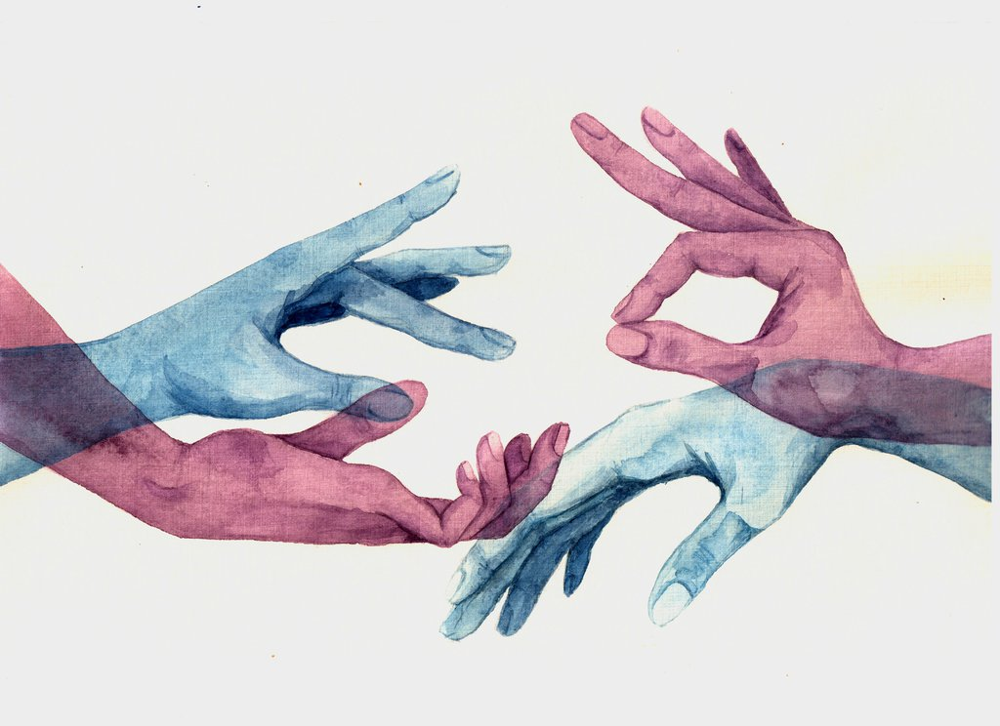

Through extensive market research, we will help your fine art gallery differenitate itself within the art world. Our research
reports are clear and consice and will inform marketing decisions and how to position yourself within the art world. Our combined knowledge and expereince
in the writing and art world gives us a thorough understanding and unique perspective of how to position an art gallery or artist.
As social media becomes increasingly important and relevant, having a profile with effective and cohesive communication
is crucial to finding new clients and establishing yourself in the art world. We will create and help maintain your social media presence
across all social media platforms. For example, we can help curate Instagram posts and promotions before the launch of a new exhibit in your gallery. We can also
build a social media presence for your gallery if that is something you are looking to create.

We are also able to help with the coordination of sales and partnerships with other galleries. Hosting events with other galleries can help
you build your network and meet other fine artists and galleries. In terms of sales, with Covid it can be difficult getting art to the customer. We can help by coordinating
pick ups and shipments of art pieces.